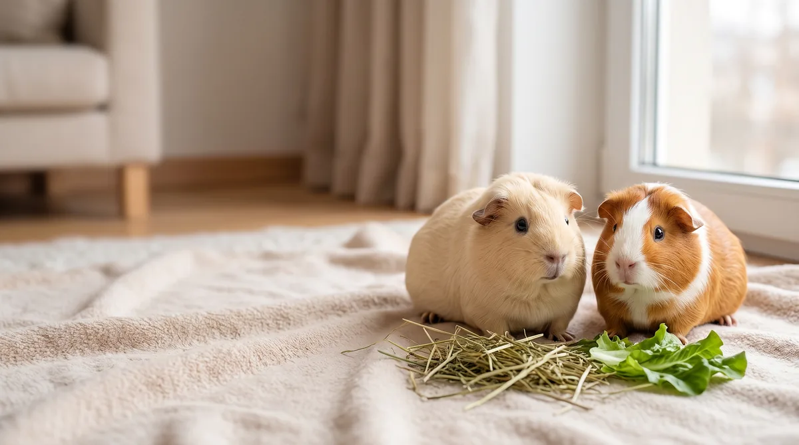

Пять морских свинок ищут дом
Выберите свинку, прочитайте о её характере и уходе и оставьте заявку на её странице.
Выбрать свинку
Свинки в продаже

Пломбир
Новичку: подойдётАмериканская гладкошёрстная. Самец, 5 месяцев
Спокойный, любит сидеть на руках
Открыть страницу
Вихрь
Новичку: оценки нетАбиссинская. Самец, 4 месяца
Любопытный, первым бежит к миске
Открыть страницу
Шёлк
Новичку: оценки нетШерсть надо регулярно расчёсыватьШелти, она же силки. Самец, 6 месяцев
Неторопливый, терпит расчёсывание
Открыть страницу
Плюша
Новичку: оценки нетТедди. Самка, 7 месяцев
Общительная, свистит, когда слышит шаги
Открыть страницу
Изюм
Новичку: не подойдётСкинни. Самец, 8 месяцев
Ласковый, ищет тёплые места
Открыть страницуПортреты сгенерированы. Клички, возраст и характер вымышлены. Оценка для новичка стоит там, где её дают источники.
Что знать до покупки
Столько живут морские свинки. Решение принимаете на этот срок.
Свинки по природе живут группами, поэтому лучше брать не одну. В смешанной группе должен быть только один некастрированный самец.
Минимум на килограмм веса в день. Организм свинки сам его не вырабатывает. Без сена страдают зубы и кишечник.
Источники: MSD Veterinary Manual: описание морских свинок; MSD Veterinary Manual: питание морских свинок. Обращение 01.11.2026.
Откуда свинки родом
Их одомашнили в Андах тысячи лет назад, а в Европу они попали в XVI веке.
Какие они бывают
Восемь пород: от гладкой шерсти до длинной, которая растёт всю жизнь, и почти без шерсти.